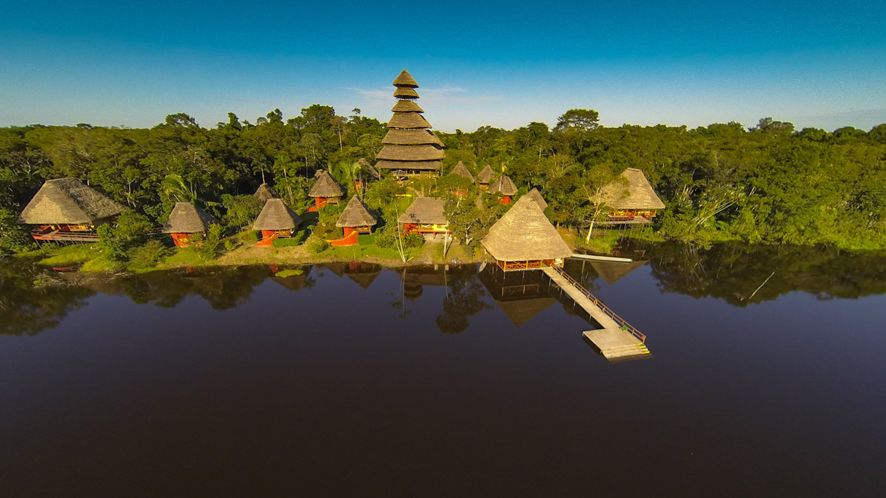
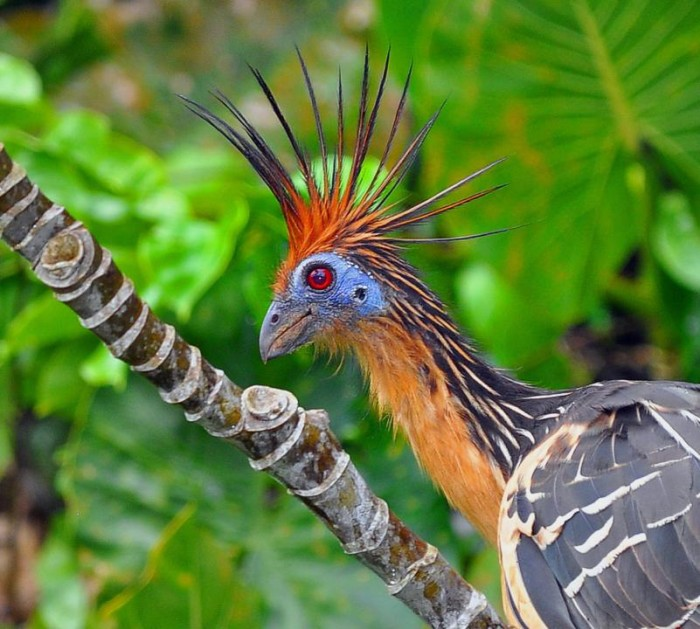

Amazon
The Napo Wildlife center
The first luxury Amazon lodge in Ecuador, started operations in 2004 preservin 84 square miles around the Añangu lake in the famous Yasuni National Park. For sure this is the location with the highest biodiversity in the Whole amazon. Important magazines and newspapers as the National Geographic, the New York Times, the BBC from the UK, the World Travel Market in London, etc., have featured the Napo Wildlife Center as best ecolodge and one of the top birding places of the World, there are a few lodges in the Amazon but we suggest this which is managed by the community of Añangu we support and all profits are for the members of the community and to build other projects for tourism, conservation, health and education.

Wild life Center 4 Days tour, please ask for longer stays
4 Days – 3 Nights
Our 4 days – 3 nights premium tour includes canoe trips along lakes and rivers, forest excursions and birding tours. Experience an incredible adventure paddling a small canoe or hiking on the forest trails. Get a close up view of the Amazon wildlife in the Yasuní National Park, a sacred land considered one of the most diverse areas in the planet.
For more details read the information below.
Day 1:
Departing from Quito, Ecuador’s capital city, a 30-minutes flight over the eastern Andes will take you to the jungle town of Coca. There, members of our staff will be waiting for you to give you warm welcome and take you to the Francisco de Orellana Port –which is only 5 minutes away from the airport. And here is where the real adventure begins! At the port you will get on a motorized canoe downstream the Napo River, the major tributary of the Amazon Rainforest in Ecuador. During the trip, you will have the chance to see different birds such as kingfishers, herons and other and admire the incredible views of the Amazon jungle that opens before your eyes. A trip a box lunch will be provided.
After our two-hours ride along the Napo River, you will arrive at the NWC’s dock entrance where to take a short break to freshen up and use the restrooms. Then, we will continue our way to the lodge on paddle-canoes –motorized canoes are not allowed within the Napo territory. This majestic and peaceful dugout canoe ride a narrow stream will lead us to the Añangu Lake, where the hotel is.
Late in the afternoon, we will arrive to the Napo Wildlife Center where our staff will welcome you with drinks and show your rooms and other areas of the lodge.
Day 2:
Adventure at the Napo Wildlife Center begins early in the morning! In this second day at the premium Amazon Jungle tour you will presence one of the most incredible nature spectacles you will ever see: the parrot clay licks. It will only take us about an hour to get to the first parrot clay lick which is of easy access from the lodge. Once we get there, at about 7:30 or 8:30 am it will take just a few minutes for birds to show up. It is a real spectacle of colors, about 11 species of bird such as parrots, macaws and parakeets visit the clay licks every day to feed with the minerals that are concentrated in the soil.
Later on, we will hike along the forest trail to visit the Kichwa Añangu community to share time with the men, women and children of the community and learning about their every-day-life activities, routines and their ancestral customs and traditions. Then, we will say goodbye to the families and continue our adventure Then, we will go back to the creek and go hiking for 30 minutes throughout a Terra Firme forest until reaching the second parrot clay lick and repeat the experience of seeing a great variety of parrots, parakeets and macaws as you eat a delicious lunch our staff will provide you.
Late in the afternoon we will arrive back to the NWC to rest and enjoy from our lodge social areas and comfortable-luxury rooms.

Day 3:
A delicious breakfast will be served at the NWC restaurant early in the morning. After that, we will depart to the Canopy Observation Tower, a high platform from which you will get a close up view of the most amazing views of the jungle. The tower is about 30 minutes from the lodge within the terra forme forest.
This wooden platform of 36 meters high was built just next a huge and ancient Kapok tree. To get to the top you have to pass through different levels of the forest. Then, when you are finally there, the immensity and beauty of the Amazon jungle opens just before you. There are not enough words to describe it, you have to live it yourself!
Birds that are just virtually impossible to see from the jungle floor will pass right through you. Flocks of vibrantly colored tanagers, blue-and-yellow macaws and large toucans fly past in the early mornings and afternoons.
In the afternoon, after have lunch back in the Napo Wildlife Center, we will go deep into a terra firme trail to discover the beautiful and mysterious wildlife that hides in the forest interior. There are great possibilities to see lizards, different species of monkeys such as the endemic Golden Mantle Tamarin monkey, rare and unique insects and even some scary snakes! Also, we will take you to explore the black water Añangu Lake and streams that are home of different species of fish and mammals such as the Giant Otter, a unique specie from the Amazon.
Day 4:
Last day, we will depart after an early breakfast to go back to Coca city and repeat the adventure to go out the way you came, a ride on a paddle-canoe to the docking area and then embarking on a motorize canoe to the jungle town.
During this last excursion the creek may reveal new sights of rare bird species and monkeys and a Giant Otter will possibly show up to good-bye you!
Price per person in twin or triple cabin
- Three nights USD1289.00
- Four nights USD1536.00
Price includes:
Air ticket Quito / Coca / Quito
Book Now!